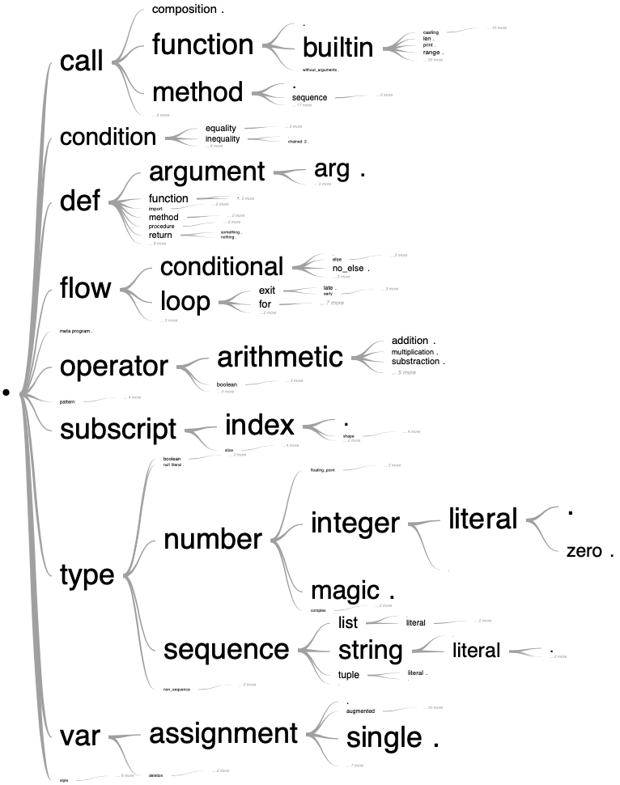

Package paroxython
Will you ever read me?
Introduction
Paroxython is a set of command line tools which tag and filter by algorithmic features your collection of Python programming exercises.
Audience
You are a teacher, in charge of an introductory programming course in an educational institution. Over the years, you have accumulated many—far too many—programs and code snippets that may be of interest to your students.
Or, as a seasoned developer, you would like to share your knowledge by helping a loved one learn how to code. A cursory search for pedagogical material yields an overwhelming amount of websites and repositories stuffed with Python programs of various levels (e.g., 1, 2, 3, 4, 5, 6, and a lot more from Awesome Python in Education).
In any case, the Python source codes you have gathered are typically numerous (hundreds or even thousands), reasonably sized (anything below 100 lines of code), and educational in nature (e.g., snippets, examples, quizzes, exercise solutions, classic algorithms). The programming concepts you plan to teach remain relatively low level (e.g. assignments, nested loops, accumulation patterns, tail recursive functions, etc.).
If all that sounds familiar, keep reading me.
Main goals
Paroxython aims to help you select, from your collection, the one program that best suits your needs. For instance, it will gladly answer the following questions:
- How can this concept be illustrated?
- What problems use the same algorithmic and data structures as this one?
- What homework assignment should I give my students so they can practice the content of the last lesson?
Moreover, since Paroxython knows what your class knows, it can recommend the right program at the right time:
- What would make a good review exercise?
- Which exercises can I give on this exam?
- What is the current learning cost of this example?
In the long run, Paroxython may guide you and somehow make you rethink your course outline:
- What are the prerequisites for the concept of assignment?
- Do I have enough material to introduce subroutines before I even talk about conditionals and loops?
- Among the loops, which must come first: the most powerful (
while), or the most useful (for)?- How to logically structure this bunch of usual iterative patterns?
- What are the basics, exactly?
All issues on which the author changed his mind since he started to work on this project!
In an ideal world, Paroxython could even put an end to the deadliest religious wars, with rational, data-driven arguments:
- Father, is it a sin to exit early?
- Should a real byte use a mask?
How it works
Paroxython starts from a given folder of programs. Its contents is parsed, and all features that meet the provided specifications are labelled and associated with their spans (e.g., "assignment_lhs_identifier:a": 4, 6, 18 or "loop_with_late_exit:while": 3-7, 20-29).
These labels constitute only scattered knowledge. The next step is to map them onto a taxonomy designed with basic hierarchical constraints in mind (e.g., the fact that the introduction of the concept of early exit must come after that of loop, which itself requires that of control flow, is expressed by the taxon "flow/loop/exit/early").

Extract of the taxonomy generated from The Algorithms - Python.
Click to jump to its full dynamic version in the user manual.
Everything is then persisted in a tag database, which can later be filtered through a pipeline of commands, for instance:
- include only the programs which feature a recursive function;
- exclude this or that program you want to set aside for the exam;
- “impart” all programs studied so far, i.e, consider that all the notions they implement are acquired.
The result is a list of program recommendations ordered by increasing learning cost.
Example
Suppose that the programs directory contains these simple programs.
First, build this tag database:
> paroxython collect programs
Labelling 21 programs.
Mapping taxonomy on 21 programs.
Writing programs_db.json.
Then, filter it through this pipeline:
> paroxython recommend programs
Processing 5 commands on 21 programs.
19 programs remaining after operation 1 (impart).
18 programs remaining after operation 2 (exclude).
12 programs remaining after operation 3 (exclude).
10 programs remaining after operation 4 (include).
10 programs remaining after operation 5 (hide).
Dumped: programs_recommendations.md.
Et voilà, your recommendation report!
Installation and test-drive
Command line
Much to no one's surprise:
python -m pip install paroxython
The following command should print a help message and exit:
paroxython --help
IPython magic command
If you use Jupyter notebook/lab, you've also just installed a so-called magic command. Load it like this:
%load_ext paroxython
This should print "paroxython 0.7.0 loaded.". Run it on a cell of Python code:
%%paroxython # Lines
def fibonacci(n): # 2
result = [] # 3
(a, b) = (0, 1) # 4
while a < n: # 5
result.append(a) # 6
(a, b) = (b, a + b) # 7
return result # 8
| Taxon | Lines |
|---|---|
call/subroutine/method/sequence/list/append |
6 |
condition/inequality |
5 |
def/subroutine/function/impure |
2-8 |
def/subroutine/parameter/arg |
2 |
flow/loop/exit/late |
5-7 |
flow/loop/while |
5-7 |
meta/count/program/sloc/8 |
2-8 |
meta/count/subroutine/sloc/7 |
2-8 |
meta/count/variety/3 |
2-8 |
meta/program |
2-8 |
operator/arithmetic/addition |
7 |
style/procedural |
2-8 |
type/number/integer/literal |
4 |
type/number/integer/literal/zero |
4 |
type/sequence/list |
6 |
type/sequence/list/literal/empty |
3 |
type/sequence/tuple/literal |
4, 4, 7, 7 |
var/assignment/explicit/parallel |
4 |
var/assignment/explicit/parallel/slide |
7 |
var/assignment/explicit/single |
3 |
var/assignment/implicit/parameter |
2 |
var/scope/local |
2-8, 2-8, 2-8, 2-8 |
As you can see, in this program, Paroxython identifies among others:
- the use of the procedural paradigm (
style/procedural); - an impure function (
def/subroutine/function/impure); - a
whileloop (flow/loop/while) with a late exit (flow/loop/exit/late); - a little bit of voodoo on lists (
type/sequence/list/literal/emptyandcall/subroutine/method/sequence/list/append); - a simple tuple assignment (
var/assignment/explicit/parallel). Note that we distinguish between explicit (with=) and implicit (parameters and iteration variables) assignments; - a “sliding” tuple assignment (
var/assignment/explicit/parallel/slide). If the denomination is unique to us, the pattern itself occurs in a number of programs: implementations of C-finite sequences with C greater than 1, Greatest Common Divisor, Quicksort, etc. - four local variables (
var/scope/local); - an estimation of the variety of concepts involved (
meta/count/variety/***), depending on the number of lines, features and distinct features.
The magic command %%paroxython (corresponding to the subcommand tag) only scratches the surface of the system. As shown before, to estimate the learning cost of the features and get actionable recommendations, you will need first to construct the tag database with collect, and then call recommend on a pipeline of yours.
About
What's in a name?
Far from being an arbitrary label, “Paroxython” has been scientifically formulated by an independent laboratory to possess the following properties:
- It features both “Python” and “taxon”.
- It provides a future-proof template for adaptations to other languages (Carox, Jaroxava, JaroxavaScript, Garoxo, Laroxua, Ocaroxaml, Haroxaskell, etc.) or fields of knowledge (Haroxarmony, Garoxeography, Maroxagnetohydrodynamics, etc.).
- “Paroxytone” denotes a word accented or stressed on the penult1 and translates as “paroxyton” in my mother tongue.
Citing this work
@manual{,
title = {Paroxython: Tag and Recommend Python Exercises Based on Algorithmic Features},
author = {{Aristide Grange}},
organization = {Université de Lorraine},
address = {Metz, France},
year = {2020},
url = {https://laowantong.github.io/paroxython/},
}
Collaborating
Paroxython is on GitHub and welcomes your issues or pull requests. You may:
- contribute to the code;
- add new features in
spec.md; - submit your personal changes to
taxonomy.tsvfor integration in the default taxonomy; - translate some of this documentation into English.
If you use Paroxython for your programming course, I would love to get your feedback. If you're a researcher and interested in a scientific collaboration, drop an email to my dot-separated name (cf. previous section) at univ-lorraine.fr.
-
“paroxytone,” Merriam-Webster.com Dictionary, https://www.merriam-webster.com/dictionary/paroxytone. Accessed 8/7/2020. ↩
Sub-modules
paroxython.assess_costs-
Assess the learning cost associated with the introduction of the given programs.
paroxython.cli-
Command line interface for the main functionalities of Paroxython.
paroxython.cli_collect-
Walk a directory, tag its Python files and make a database of the results.
paroxython.cli_recommend-
Read and execute a pipeline of commands and report the learning costs.
paroxython.cli_tag-
Tag one Python file and output the table of its taxa or labels.
paroxython.compare_spans-
A dictionary of predicates listing all possible relations between two intervals (x_1, x_2) and (y_1, y_2).
paroxython.derived_labels_db-
An in-memory database collecting the labels of a given program.
paroxython.filter_programs-
Evolve a set of selected programs and a set of taxa representing the imparted knowledge.
paroxython.flatten_ast-
Return a non-recursive, multiline dump of the AST (with some tweaks).
paroxython.goodies-
A grab bag of various generic functions and factories.
paroxython.label_programs-
List all the programs of a given directory, with their field
labelspopulated. paroxython.list_programs-
Scan a directory for Python programs and yield the corresponding
Programobjects. paroxython.make_db-
Collect all infos pertaining to the programs, labels and taxa into a so-called tag database.
paroxython.map_taxonomy-
Translate labels into taxa.
paroxython.normalize_predicate-
Process an input string to interpret it as a known predicate.
paroxython.parse_program-
Search a program for the features specified in
spec.md. paroxython.preprocess_source-
Bring together everything relative to the pre-processing of a given source code.
paroxython.recommend_programs-
A wrapper around
ProgramFilter, feeding it with commands and assessing the learning costs of its final state.